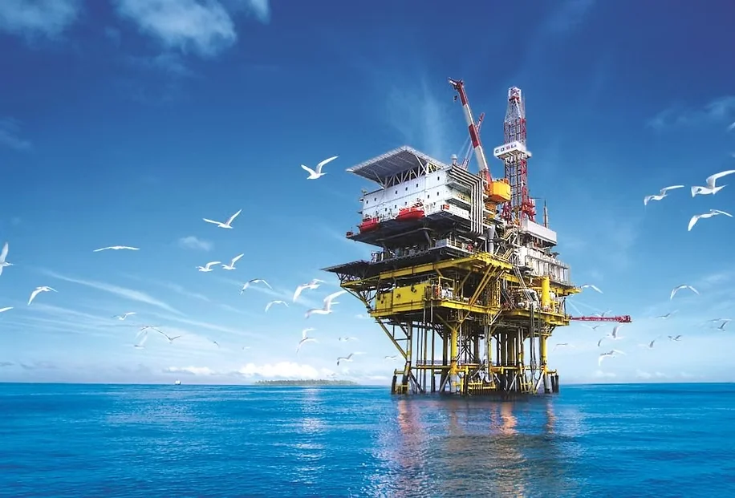
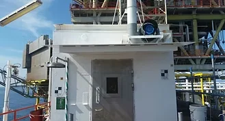

MODERN ERA PLUS SDN. BHD. · EST. 2012
Engineered
for what’s
next.
Quality and competency you can depend on — delivering practical engineering, fabrication and facility solutions across onshore and offshore environments.
2012Company established
17Capability categories
MiriSarawak · Malaysia
INTERACTIVE / OFFSHORE PLATFORMREADY TO LOAD
MODEL EXPERIENCE
01 / OFFSHORE
01 / OFFSHORE
MOVE TO EXPLORE · DRAG TO ROTATE · SCROLL TO ZOOM
EngineeringDesign & fabrication
FacilitiesLiving quarters & fit-out
TechnicalMaintenance & hygiene
PipeworksRehabilitation & support
WHAT WE DO
Built around real-world
industrial demands.

MIRI · SARAWAK · MALAYSIA
THE COMPANY
Capability.
Commitment.
Confidence.
Established in 2012 and based in Miri, Modern Era Plus is a Malaysian-owned company supporting the needs of industrial operations and facilities.
Our approach brings together practical site knowledge, technical coordination and a strong emphasis on safety, quality and dependable project delivery.
2012
Established in Miri
Onshore
Facility environments
Offshore
Industry-focused works
CAPABILITY SPOTLIGHT
From design to
delivery.
An extensive service portfolio spanning engineering, living-quarter fit-outs, industrial safety and maintenance support.


LET'S DISCUSS YOUR PROJECT